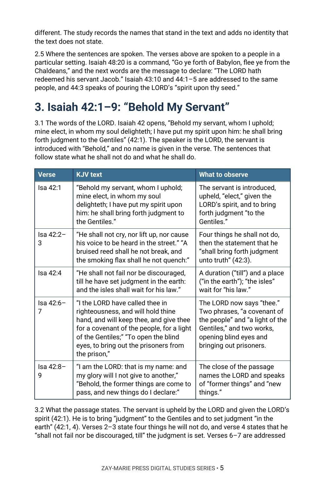

The Servant in Isaiah
Who Is Called “My Servant,” and What Each Passage Says and Leaves Unsaid
Where Isaiah 41–53 says “my servant,” whom does each passage name, and what does it say the servant does or suffers?
Isaiah 53 is among the most quoted chapters of the Old Testament, and the question it raises is among the most asked: of whom speaketh the prophet this? The word “servant” runs through Isaiah 41–53, and it is attached to more than one figure. This study reads the passages in the order Isaiah gave them.
It asks four things of every passage: whom it names, who speaks, what the servant does or suffers, and what it leaves unsaid. It then reads each New Testament quotation in its own chapter.
Ask Whom Each Passage Names as “My Servant”
You will read Isaiah 40:1–3 for the setting, follow the verses that name Israel and Jacob as “my servant,” read Isaiah 42:1–9 clause by clause, follow the speaker of Isaiah 49:1–7 and 50:4–10, read Isaiah 52:13–53:12 for its changes of speaker, and then read each New Testament quotation in the chapter where it stands.
Readers who already own Study 80 (The Lamb Foreordained), Study 54 (Justification), Study 53 (Redemption) or Study 12 (The New Covenant) will recognize adjoining ground. Study 80 reads Isaiah 53:7 among the passages on the Lamb; Study 54 and Study 53 read justification and redemption across the Scriptures; Study 12 reads the covenant passages, and this study reports the words “a covenant of the people” (Isaiah 42:6) without treating the covenant. The question this study alone answers: where Isaiah 41–53 says “my servant,” whom does each passage name, what does it say the servant does or suffers, and what does each New Testament quotation say and leave unsaid?
Related Reading
Digital Studies
Study 80 — The Lamb Foreordained Read Isaiah 53:7 among the passages on the Lamb; Study 86 reads the whole run of servant passages and does not treat the Lamb.
Study 54 — Justification Read the verdict declared across the Scriptures; Study 86 records “justify many” (Isaiah 53:11) as written and builds no doctrine from it.
Study 12 — The New Covenant Read the covenant passages; Study 86 reports “a covenant of the people” (Isaiah 42:6) without treating the covenant.
Commentary Series
The Sign Gifts Series, Volume 3 — Healing in the Body Reads Isaiah 53:4–6 beside Matthew 8:17 and 1 Peter 2:24 and argues none promises healing to the Body; this study reads the servant passages of Isaiah in order.
Follow the Servant Through the Passages
The Verses That Name Israel and Jacob
Trace “my servant” through Isaiah 41–48 and note, for each verse, whom the LORD names and the verbs used of him.
The Servant Introduced
Read Isaiah 42:1–9 clause by clause and mark what the servant is said to do, what he is said not to do, and what is said to “thee.”
The Speaker and the Name
Follow the speaker of Isaiah 49:1–7 and 50:4–10, including the name in 49:3 and the work in 49:5–6, and record both as written.
The Changes of Voice
Read Isaiah 52:13–53:12 in order, noting each change of speaker and pronoun and the verbs of suffering and of exaltation.
The Quotations in Their Chapters
Set each New Testament quotation in its own chapter, with its own audience, and observe which words are quoted.
Two Readings Tested
Test two common readings of the servant passages against their own words, sorting what the text states from what readers add.
Read the Word in Its Context
Isaiah 41:8–10
“But thou, Israel, art my servant, Jacob whom I have chosen.”
Isaiah 42:1–9
“Behold my servant, whom I uphold,” and what he shall and shall not do.
Isaiah 44:21; 48:20
The named servant, “formed” and “redeemed.”
Isaiah 49:1–7
A speaker, a name in 49:3 and a work “to bring Jacob again.”
Isaiah 50:4–10
A speaker’s words and the phrase “his servant.”
Isaiah 52:13–15
“My servant shall deal prudently,” exalted, and marred.
Isaiah 53:1–12
The changes of voice, the verbs of suffering and “my righteous servant.”
Matthew 12:15–21; Acts 8:26–35
Isaiah quoted in the Gospel and a question asked on the road to Gaza.
A Rule for Reading This Subject
Read each passage in its own setting, with its speaker, its audience and its occasion. Make a link between passages only where a passage makes it.
When a text leaves a matter unsaid, record that and stop.
Preview the Study Before You Purchase
Click any page to enlarge it for reading.



Reading Isaiah 42:1–9
See how the study sets the KJV text in a table beside what to observe.
A Focused Study of the Servant Passages of Isaiah 41–53
16-Page Digital PDF
Approved cover and 15-page numbered interior.
7 Teaching Sections
A text-driven walk through Isaiah 41–53, from the setting to the passages side by side.
Callout Boxes
Five callout boxes marking the study’s key working rules.
KJV Tables
Tables setting out the key passages for observation.
Scripture-Tracing Exercise
Guided traces through the passages the study relies on.
Guided Further Study
Passage groups for deeper reading.
Review Questions
Questions testing the study’s markers and method.
Conclusion
A plain statement of what the passages reveal, in one paragraph.
The Servant in Isaiah
16-page digital PDF · For personal use